|
Remove the 2 screws and vertical adjuster handle RH.
Front Seat Assembly RH (Manual Seat Type) Disassembly |
| 1. Remove Front Seat Under Tray (w/ Seat Under Tray) |
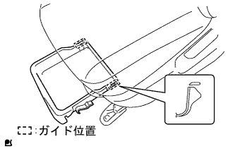 |
Detach the 2 guides and remove the seat under tray. (Front passenger side only)
| 2. Remove Reclining Adjuster Release Handle RH |
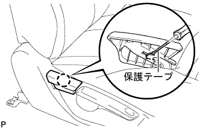 |
With the handle pulled up, using a thin-blade screwdriver wrapped with protective tape, disengage the claw and remove the reclining adjuster release handle RH.
| 3. Remove Vertical Adjuster Cover RH |
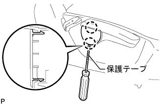 |
Using a thin-blade screwdriver wrapped with protective tape, pry at the cutout, disengage the 2 claws and remove the vertical adjuster cover RH.
| 4. Remove Vertical Adjuster Handle RH |
|
Remove the 2 screws and vertical adjuster handle RH.
| 5. Remove Front Seat Cushion Shield RH |
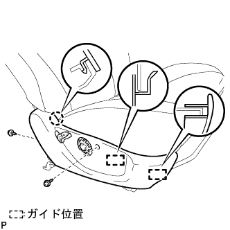 |
Remove the 2 screws.
Disengage the claws.
Detach the 2 guides and remove the front seat cushion shield RH.
| 6. Remove Front Seat Inner Belt Assembly RH |
Disconnect the connector and each clamp.
 |
Remove the nut and the front seat inner belt assembly RH.
| 7. Remove Front Seat Cushion Shield Inner RH |
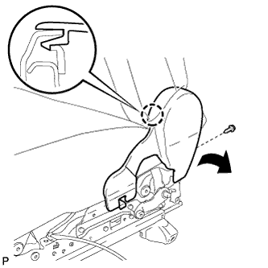 |
Remove the screw, pull the front seat cushion shield INN RH in the direction of the arrow shown in the illustration, and disengage the claw.
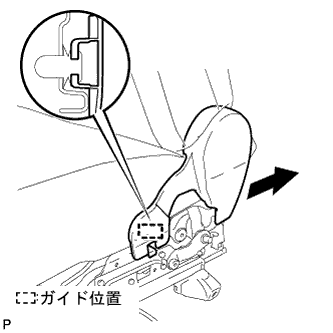 |
Slide the front seat cushion shield inner RH in the direction of the arrow in the illustration, disengage the clip guide and remove it.
| 8. Remove Separate Type Front Seat Cushion Cover with Pad |
 |
Using a clip remover, remove the 2 clips.
Disengage the 3 J-hooks.
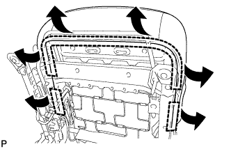 |
Disengage each J-hook and remove the separate type front seat cushion cover with pad.
| 9. Remove Separate Type Front Seat Cushion Cover RH |
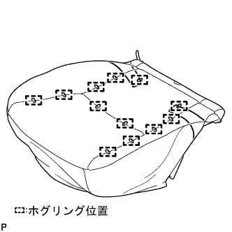 |
Remove the 12 hog rings and the separate type front seat cushion cover RH.
| 10. Remove Separate Type Front Seatback Cover with Pad |
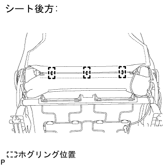 |
Remove the 3 hog rings.
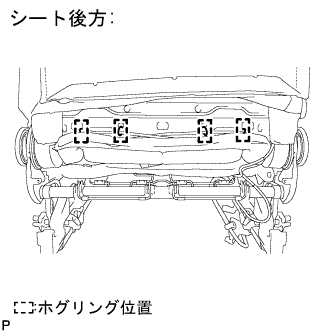 |
Remove the 4 hog rings.
 |
Remove the nut at the position shown in the illustration, and disconnect the bracket of the separate type front seatback cover RH.
 |
Disengage the 4 claws and remove the 2 front seat headrest supports.
Remove the separate type front seatback cover with pad from the front seat frame & adjuster RH.
| 11. Remove Separate Type Front Seatback Cover RH |
 |
Remove the 8 hog rings and the separate type front seatback cover RH.
| 12. Remove Reclining Adjuster Inside Cover RH |
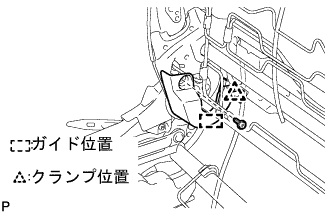 |
Remove the screw.
Disengage the clamp and guide, and remove the reclining adjuster inside cover RH.
| 13. Remove Reclining Adjuster Inside Cover RH |
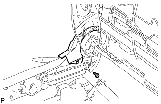 |
Remove the screw and the reclining adjuster inside cover RH.
| 14. Remove Reclining Adjuster Inside Cover LH |
 |
Remove the screw.
Detach the guide and remove the reclining adjuster inside cover LH.
| 15. Remove Reclining Adjuster Inside Cover LH |
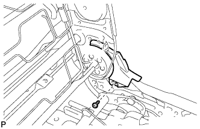 |
Remove the screw and the reclining adjuster inside cover LH.
| 16. Remove Front Seat Cushion Shield Lower RH |
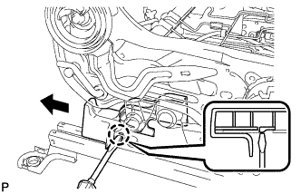 |
While disengaging the claws using a thin-blade screwdriver, remove the front seat cushion shield LWR RH in the direction of the arrow shown in the illustration.
| 17. Remove Front Seat Cushion Shield Lower LH |
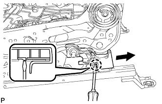 |
While disengaging the claws using a thin-blade screwdriver, remove the front seat cushion shield LWR LH in the direction of the arrow shown in the illustration.